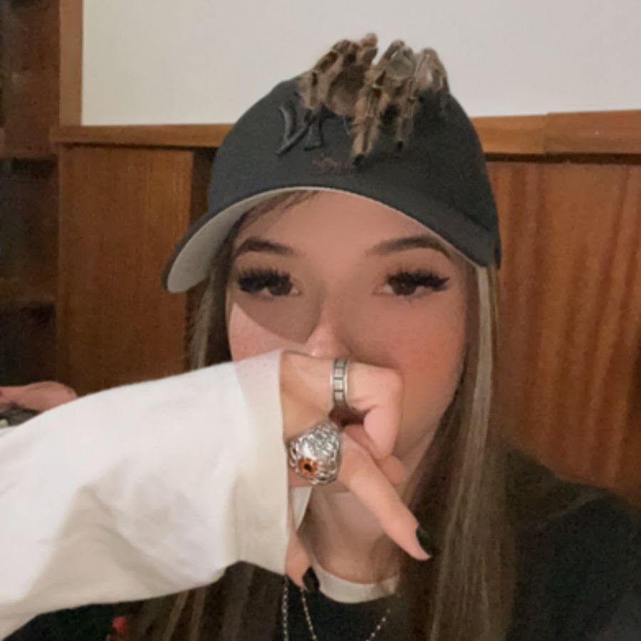
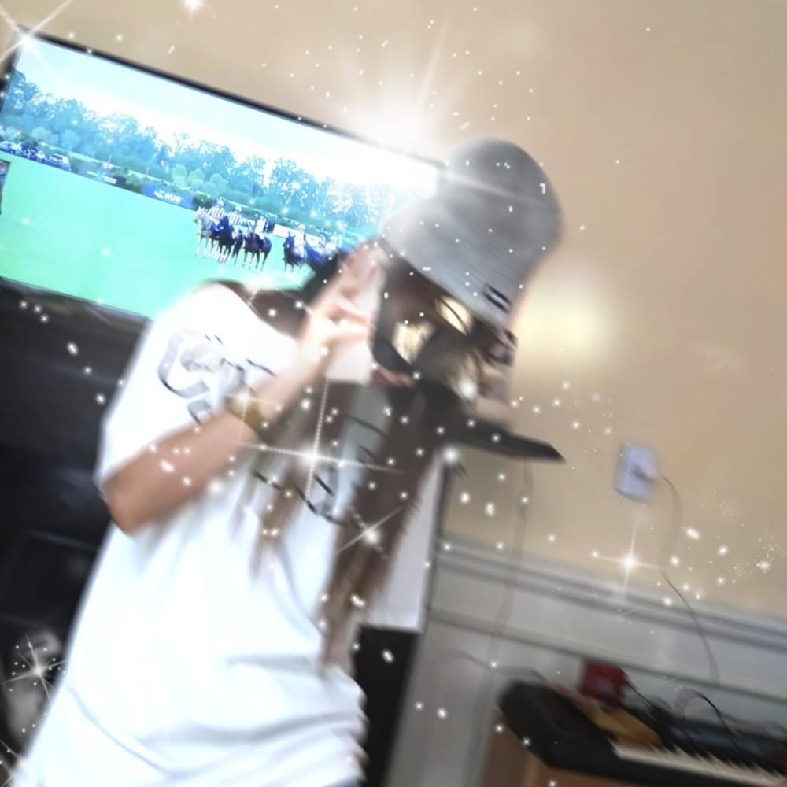

Saramalacara
 Biografia
Saramalacara es una artista musical argentina de 22 años de edad, su verdadero nombre es Sara Azul Froján, nacio el 8 de Noviembre del año 2000, crecio en la ciudad de Mataderos ubicada en la provincia de Buenos Aires, forma parte de una crew llamada RipGang junto a otros artista conocidos como Dillom, Muerejoven, ODDMAMI, entre otros.
Arranco con la musica en su adolescencia y a dia de hoy cuenta con varios temas los cuales algunos se han vuelto bastantes populares en la escena, ademas de haber dado varios shows a lo largo del pais y algun que otro fuera del pais, tambien ha participado del Lollapalooza en argentina en el año 2022.
Sus canciones
Algunos de los temas que saco son: